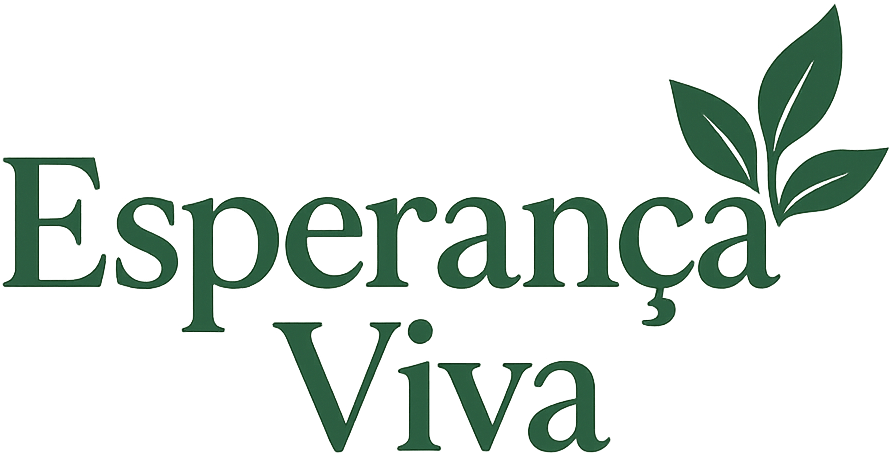

Transformando vidas através da solidariedade
Conheça nossos projetos sociais e descubra como fazer parte dessa transformação.
Ver ProjetosQuem Somos
O Esperança Viva é uma organização sem fins lucrativos comprometida em transformar realidades e promover o desenvolvimento sustentável em comunidades em situação de vulnerabilidade. Nossa missão é semear oportunidades, fortalecer vínculos e inspirar ações solidárias que gerem impacto social duradouro.
Acreditamos que a mudança começa com gestos simples e coletivos. Por meio de projetos voltados à educação, saúde, inclusão e sustentabilidade, buscamos construir um futuro mais justo, humano e cheio de esperança para todos.